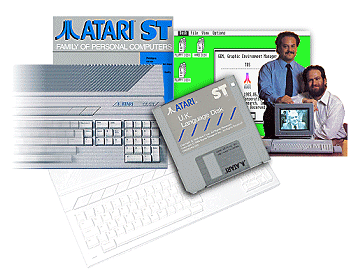

|

The ST range grew from a
number of elements in 1985, such as a separate PSU and
disk drive, to an integrated unit launched as the 520STFM.
Designations in the ST range
include "F" for an integrated FDD, "M" for a built-in TV
Modulator and "E" for the Enhanced or Extended line.
Memory started out with a small allocation of 128Kb for
the 130ST, this was never released, and the 260ST
(256Kb) saw only a limited production run. The ST launched with 512Kb of internal RAM
(520ST),
and some European models also had the designation
"520ST+", which was a standard 520ST with another 512Kb
"piggybacked" onto the existing memory.
Soon, a 1MB machine was
launched, and the Atari 1040ST was the first computer in
the world to offer a full 1MB RAM for under $1000.00.
A more professional ST was
launched called the MEGA ST, this had a detachable
keyboard, and the first ST to offer 2MB and 4MB of RAM.
AEX will provide more detail on this machine at a later
date.
Atari launched the STE line in
1989, and it was designed to compete with Commodore Amiga
500. Although Atari denied this claim, the STE was
an upgrade to combat the weaknesses perceived by the press
of the existing model. These were namely internal
sound, colour and hardware scrolling abilities, which were
squarely aimed at the games publishers.
unfortunately, most games publishers rarely used the new
specifications of the STE due to the additional work, and
to ensure compatibility with older STFM models.
Atari always denied that the
STE was rushed out the door, but problems with the DMA
chip, which led to Hard Drive errors, and the problems
with the upgraded GEM/TOS OS, led observers to believe
that this was the case. Eventually, these problems
were rectified, but the damage was done, and the
journalists didn't do the company any favours.
The STE did have some unique
and clever features, including the first home computer to
offer easy memory upgrades by utilising slot-in memory
modules (although the case still had to be opened using a
screw-driver!). Atari also added 2 additional
joystick ports, which were advanced digital controller
ports, another first.
The last ST designed by Atari
was the Mega STE, and we will provide more detail on this
machine at a later date.
|